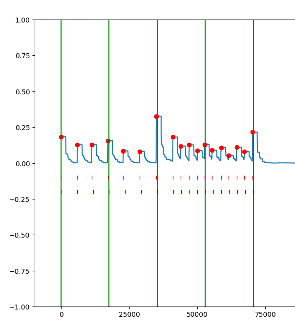
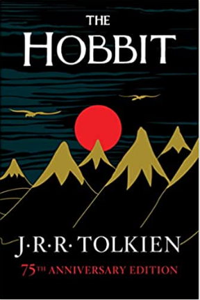
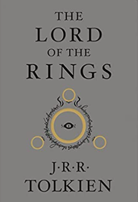
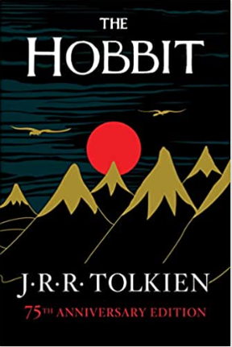

Seth M. Lamancusa
From yours truly
Seth M. Lamancusa

Seth in 2021
Personal details
Born
October 7, 2002
Jobs
Dunkin'
Crew Member
August 2019 - February 2021
OSU
Software 1 Grader
January 2022 - May 2022
Seth Lamancusa (Born October 7, 2002) is a Data Analytics major attending The Ohio State University pursuing a Cognitive Science minor. Interests include AI research, music, theoretical physics, and coming up with ideas I have no intention of executing. My high school English teachers may not approve of the mid-sentence tense change but the third-person thing felt a bit narcissistic for me even given the nature of this whole page.
And what is the nature of this page? It's simultaneously personal catalogue and professional development tool. I want a platform on which to showcase my projects, accomplishments, thoughts, and personal developments. Instead of some generic Bootstrap template with the same material as every other professional development-oriented personal website, I aim to use this as a living outlet for my own passions, projects, and personal developments.
I grew up in the suburbs of Northeast Ohio, opportunity abound. I always had an affinity for math and logic which could be why I gravitated to coding so strongly when I was introduced to Scratch in the 7th grade. Following a brief but enthusiastic gamedev phase I leaned into marching band and drum corps, occupying much of my high school mental and temporal capital. During my Junior and Senior years I discovered a fascination with artificial intelligence. It appealed to my philosophical nature and something felt undeniably profound about understanding the nature of consciousness. "We aren't humans experiencing the universe, but the universe experiencing humans." - Alan Watts, maybe. Understanding how humans understand the universe seems integral to understanding the universe as a human.
Contents
- 1 Education
-
2
Hobbies
- 2.1 Percussion
- 2.2 Gamedev
Education
August 7, 2022
I attended Stow-Munroe Falls High School for four years to round off my preundergraduate education. Involved with Speech and Debate, Marching Band, Concert Band, and co-founding our very own Esports team, I did my best to remain active in our community while leaning into those extracurriculars which inspired a unique passion.
As far as school work was concerned, I challenged myself to maintain the level of academic proficiency I had exemplified in elementary school. Unfortunately the subject matter had moved on from arithmetic and the solar system (though I would notably maintain an avid interest in both math and space into my adult life). Regardless, I took a total of 8 college-level AP courses thoughout my time in high school, none of which resulted in test scores lower than 4. I engaged especially with AP English Literature and Composition and AP English Language and Composition, but skipped AP Psychology to get ahead on college GE's with AP Micro and Macroeconomics. In a twist of fate, I would wind up pursuing a Cognitive Science minor after graduating high school, and neither of those two economics classes would be eligible for transfer credit. Ha!
Hobbies
October 15, 2022
Characteristic of my youth moreso than any individual pursuit was a constant juggling of different interests and hobbies (and I don't mean literal juggling, though this was in fact one of them). From various video games to speed cubing to art to lucid dreaming to speedrunning these same games, to various sports, chess, lifting, and finally percussion and computer science, I always enjoyed more than the thing itself, getting better at a thing. Watching my free throw get more consistent, my Celeste Classic time get lower, my art look better, or my playing sound cleaner were different mediums through which I was experiencing the same love of learning. Video games appealed especially to this lust for progress; filling out a Minecraft world over the course of months of planning and resource-gathering or watching my rank icon roll over from gold to platinum were satisfying for the same reason drawing and juggling were. The progress, physical or skill-related, validated the time and energy committed to the project or skill.
I've noticed over the past few years an erring away from this formulaic recycling of hobbies. While I will never cease to enjoy air-dribbling in Rocket League or finding an especially clever tactic in Chess, these pursuits eventually felt too narrow. "The ability to play chess is the sign of a gentleman. The ability to play chess well is the sign of a wasted life." - Paul Morphy (Chess Grandmaster). I knew I was capable of great organization, imagination, and discipline and I felt the need to apply this proficiency to something profound and unique. Since then I've found myself increasingly excited by certain academic disciplines, especially history and physics, and uniquely impassioned by the subject of cognition, especially human and artificial. These passions satisfy the same desire for proficiency as did video games and sports, but without their limited scope. It took my realizing that learning information is not so different to learning a skill to discover a real passion for knowledge. It isn't a passion for memorization, but for the forming of associations between beliefs I hold and ideas to which I'm being introduced for the first time. And in this way, learning becomes organic and natural instead of formulaic and repetitive. It's a mentality that fosters casual curiosity but doesn't necessitate rigourous study. I'll never stop enjoying video games for their simplicity and their limited scope, but there's a much grander game that we're all playing. Boundless complexity and a virtually infinite skill ceiling characterize the game we call life, and if I had to pick a hobby to spend the rest of my time exploring, it'd be that one.
Percussion
The hobby, and singular pursuit to which I have undoubtedly dedicated the most time is that of percussion. It started in 5th grade, at which point I decided trumpet just wasn't loud enough for me. I picked up a pair of sticks for the first time and participated in my middle schools' concert band programs throughout 8th grade. The advent of marching band in high school and the mentorship of an older student who was involved with independent drum corps and indoor programs (thanks Alex) accelerated the growth of my passion for the sport of marching percussion, while experimenting with increasingly sophisticated keyboard percussion techniques inspired a real love for the musicality of concert and solo percussion.
Fulfilling the roles of squad leader and section leader at my high school for multiple years and participating in WGI's Matrix A 2021 indoor group, then going on to prepare to tryout for The Best Damn Band In The Land (TBDBITL) two years running, participating in the university's athletic band my Freshman year and practicing thousands of hours besides any of these, it's safe to say that among the projects and skills I've developed, and among the passions I've cultivated, percussion outranks the rest.
Notably, however, and despite preparing to try out for TBDBITL twice now, I have no intention of going for a third round. In fact, I specify "...prepared to try out..." instead of "...tried out..." for a reason. At the end of the summer before my Sophomore year, a week before tryouts and after having worked all summer to prepare, I decided against trying out. I still can't typically convince perople what I did was reasonable given the reputation the band has and my generous odds of making it, but I'll do what I can to contextualize the dramatic shift away from the passion which inspired such a unique devotion in high school. There was simply another group of passions which overtook band: artificial intelligence, the general formalization of cognition, and computer science/software development as a tool. Not participating in any type of band-related extracurricular Spring semester of my Freshman year probably played a role in my willingness to formally abandon the hobby at the end of the summer: I learned I could enjoy life just as much, if not more without band. Between the classes I took and the ideas for software-related projects I had, I became so excited for my future in the context of computer science that I was willing to abandon my sunk costs and dive headfirst into the active realization of some of the ideas I had had for so long.
Gamedev
Despite never having completed an original project of significance, gamedev felt important to include in any personal list of hobbies on account of the fact that it truly teed up my interest in software and computer science. It all started with block coding in my seventh grade STEM class. I liked Scratch, and I liked the idea of using it to realize my ideas for video games, so in eighth grade when presented with the opportunity to pursue whatever type of project I desired as part of a once-weekly "genius hour" segment of my language arts class, I chose to make a game using Scratch. After that, I experimented with Unity for awhile before my focus was more or less redirected to drumline. I would still love to learn Unity or Unreal thoroughly in the future, as there are a number of ideas I have for unique video games, but for now I'll content myself with gamedev as a casual interest and the inspiration for 26quick.
Projects
-
26quick.com
26quick is a data science-oriented project designed to practice data collection, organization, analysis, and visulaization on a medium-sized relational database, facilitating a familiarity with the entire data pipeline (including database structure and design). Also promotes a broad understanding of full-stack responsive web development and a few ubiquitous web technologies. Broadly, the idea is to analyze trends in how people aquire skills learned by rote. What are ideal values for practice parameters to maximize improvement, such as practice session regularity, duration, and warm-up time required? The necessity to store keystroke information for every player's every repetition will itself necessitate proficiency in data organization, analytics, and visualization given the sheer scale of data available.
-
Drumline Analysis
Currently but a simple Python script, the potential for this particular project is exiting. Given the simplicity of marching snare drum as an instrument, computational analysis of a waveform proves a relatively simple challenge, enabling specific quantitative insights related to volume consistency and rhythmic accuracy. The future of the project will emphasize streamlining the user/software loop via the development of a friendly GUI, the automatic conversion of uploaded sheet music, and the inclusion of manual peak detection in the event of difficult edge cases.
-
Modelling Cognition
I love the idea of modelling different components of human cognition computationally. Just as neural networks logically replicate the brain's ability to learn certain skills, I believe the brain's abilities to categorize continuous input, reason binarily on adaptive datapoints, and express/recall its own state via natural language are replicatable and that constructing and implementing logical models of these abilities can lend insight into human cognition's apparent sophistication. My only actual implementation of this idea is a python script which attempts to infer the continuous vector space in which data points can exist based on the discrete categories into which we place them.
Blog
Unread
-
Fantasy
-

The Lion, the Witch, and the Wardrobe (series)
-
Read
-
Fantasy
-

The Hobbit
-

Lord of the Rings
-
Mistborn (series)
-

-
Science Fiction
-

Dune
-
-
Dystopian
-
Station Eleven
-
-
Young Adult
-
Harry Potter (series)
-